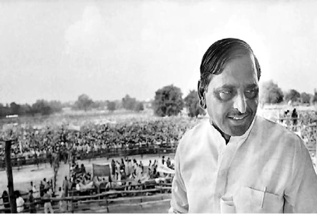

CURRENT-AFFAIRS JAN 24 2022
india
1. The 'Netaji' of UP had become MLA without contesting elections, knowing the story will be fun
In a series of interesting anecdotes related to the former Chief Ministers of UP, today let's talk about a CM of UP, who was called MLA without contesting elections.
New Delhi: Uttar Pradesh elections are very near. The dates have been announced. Although the assembly elections are in 5 states, all eyes are on the UP elections. Well, this is not the first time. The politics of UP has always been the focus of the eyes of the whole country. This state has given many big leaders to the country. Today let's talk about one such 'Netaji', whose anecdote related to it is amazing because he became MLA without contesting elections.
this is the case
Mulayam Singh Yadav is one of the big leaders of UP and is popularly known as 'Netaji'. He became the CM of UP 3 times and was also the Defense Minister of the country. But there was a time when Mulayam Singh Yadav became MLA without contesting elections. The story behind it is very interesting.
In fact, when Mulayam Singh Yadav was studying in college, he was so engrossed in student politics that his colleagues and friends started calling him MLA. At that time he studied in KK College, Etawah. From here he did his graduation and came into student politics after being influenced by the ideology of the Socialist Party. He contested the student union elections and won. During this, he did not do name politics but also did a lot of work. He used to work to solve all the problems of the students. His contact was also good, so his friends used to get the work done inside the college as well as outside in his name. That's when friends started calling Mulayam Singh Yadav as MLA.
2. Why is the mark of X on the last bogie of the train, alerts the railway officials
Indian Railways: If you have also traveled in a train at some point of time, then you must have noticed that a big X mark is made on the last bogie of the train. Let us tell you the reason for putting this mark.
New Delhi: Indian Railways is the fourth largest rail network in the world and the second largest in Asia. Every day crores of people travel by train in the country. If you have also traveled in a train at one time or another, then you must have noticed that a big X mark is made on the last bogie of the train. After all, why is this X mark made? Let's tell.
Gives a special signal to railway employees
Let us tell you that the mark of X in the last bogie of every train is an indication that it is the last bogie of the train. Along with this, this mark also tells that the train is safe, due to which the railway employees are sure that there is no accident with the train passing through the track and no bogie of the train is left behind.
3. Delhi: Why are people monitoring the 120-year-old banyan for 24 hours?
People have a lot of faith in a 120-year-old banyan tree in a village in the capital Delhi. Recently some people cut its branches, after which the villagers were deployed 24 hours to protect the tree. After all, why do the people of the village have so much faith in this tree, let us tell.
New Delhi: Local people have started monitoring round the clock to protect the 120-year-old banyan tree in the country's capital Delhi. Recently, unknown people tried to cut the tree, after which the people of the village have decided to protect the tree. According to the residents of Khampur village of Alipore, Delhi, the sentiments of the people of the village are attached to the 120-year-old banyan tree and efforts are being made to cut this green tree. This is the reason that some people of the village have been deployed round the clock to protect the tree.
Tree is coming in colony map
After the matter came to light on Friday, the villagers contacted the police. Ajay Kumar, a resident of the area said that there is a Radhakrishna temple in our area, near which a colony is being established. This 120 year old banyan tree is coming inside his map. Some unknown people have cut the branches of that tree.
The faith of the villagers is related to the tree
He told that there used to be a well near the tree, from where the people of the village used to drink sweet water, however, after the water came in the taps, the well has stopped being used and the well has been covered with soil. The sentiments of the people of the village are associated with this tree, we also worship this banyan tree.
4. Opposition to the proposed amendment in IAS cadre rules intensifies, now these states have raised objection
IAS deputation Rule Change: There have been protests against the new rule for the appointment of IAS officers. Kerala Chief Minister Pinarayi Vijayan said the change in the rules would create an atmosphere of fear among officials, while Tamil Nadu Chief Minister MK Stalin called it a blow to the federal structure.
New Delhi: The opposition to the IAS Cadre Rules Change proposed by the Central Government is increasing. The governments of many states of the country are continuously opposing it. After West Bengal, now Kerala and Tamil Nadu have objected to these rules.
Expressed protest by writing a letter to PM
Kerala CM Pinarayi Vijayan and Tamil Nadu Chief Minister MK Stalin have written a letter to PM Modi regarding this. In this letter, MK Stalin wrote that the IAS cadre rules proposed by the Center are a direct attack on the policies of the federal structure and the autonomy of the states.
MK Stalin also wrote in his letter, 'State governments work at their respective levels in the implementation of various programs including the schemes of the central government. States often have to face natural calamities, in which case the services of more IAS officers are needed than elsewhere. That's why they keep demanding other officers as well. That is, it is clear that due to the shortage of officers, the work of the states will be affected. Lateral entry recruitment of the central government has also affected the morale of the officers who are willing to deputation.
This state is also against
Earlier, the governments of West Bengal, Rajasthan, Jharkhand along with Chhattisgarh (Chattisgarh) have objected to these rules. Talking about the letter of the CM of Kerala, Pinarayi Vijayan, through his letter, has appealed to the central government to withdraw the changes in the rules. He said that this move of the government would create fear psychosis among the administrative officers and they would find it difficult to implement the policies of the state government.
5. SP wants a ban on opinion polls, told the Election Commission this reason
The Samajwadi Party has demanded the Election Commission to stop the broadcast of opinion polls shown by news channels. For this, the SP leader has also written a letter to the Election Commission.
Lucknow: The Samajwadi Party (SP) has written a letter to the Election Commission in this regard demanding an immediate ban on the broadcast of opinion polls being shown on various news channels.
SP leader wrote letter to Election Commission
State President of Samajwadi Party Naresh Uttam Patel has written a letter to the Chief Election Commissioner demanding a ban on the opinion polls being shown by various news channels with immediate effect.
'Voters are getting confused'
Patel has said in the letter that since the announcement of the dates for the Uttar Pradesh Legislative Assembly elections, many channels are showing opinion polls, which is confusing voters and affecting the election. This act is a clear violation of the model code of conduct.
Opinion polls should be banned
Patel has demanded that the opinion polls being shown by news channels should be stopped with immediate effect to conduct free, fair, fearless elections.
world
1. Turkey: Journalist arrested for saying 'the bull doesn't become king by entering the palace'
A female journalist has been arrested for making remarks against Turkish President Recep Tayyip Erdogan. TV journalist Sedef Kabas had recited a proverb targeting the President during the live program.
Istanbul: Well-known Turkish TV journalist Sedef Kabas has been arrested for insulting the President. Kabas is accused of making objectionable remarks about President Recep Tayyip Erdogan through a saying during a live program on a TV channel linked to the opposition. The police had detained Sedef from his house at 2:00 pm on Saturday night and arrested him after producing him in court.
target without naming
According to the news published in our affiliate website WION, the journalist Sedef Kabas did not name the President Recep Tayyip Erdogan, but what he said is being directly linked to the President. Erdogan's chief spokesman Fahrettin Altun expressed displeasure over Sedef's remarks, saying, 'The honor of the presidency is the honor of our country, I strongly condemn the derogatory remarks made against our president and his office'.
2. This PM has vehicles worth 4 trillion rupees, eyes will be torn after seeing the collection
We are not saying that only they have so many vehicles in the world or they are the only PM who is fond of having cars, here it is only a hobby for which people do not see the price, but make their favorite things their own.
London: Although there are hundreds of people in the world who are known for their strange hobbies, but knowing about the person whose hobbies are going to tell you today, you will also say that hobbies are really a big thing. Here's the talk of the world's richest footballer, Fake Bolkiah, who has proved his mettle on behalf of big clubs like Chelsea and Leicester.
Hardly seen such a huge collection of cars
Faik is counted among the richest players in the world, so his uncle is also not an ordinary man but the Prime Minister of Brunei. Yes, if we talk about the hobby of Hassanal Bolkiah, then you probably have not seen anyone with as many vehicles as he has in his garage. We are not saying that only they have so many vehicles in the world or they are the only PM who is fond of having cars, here it is only a hobby for which people do not see the price, but make their favorite things their own.
3. Massive explosion after a massive fire in the nightclub, 17 people died in the accident
A fire broke out in a nightclub in Cameroon's capital Yaounde, killing 17 people. Let us tell you that the injured have been admitted to a hospital in Yaounde.
Yaounde: A fire broke out at a popular nightclub in the Cameroonian capital Yaounde, killing at least 17 people due to the explosion. Government officials gave this information on Sunday.
How did the accident happen?
The tragedy comes at a time when the country is hosting the month-long 'African Football Cup of Nations Tournament' in which thousands of football players from across the continent. ), fans and officials are participating. Government spokesman René Emmanuel Saadi said, "Investigations are still underway to determine the names and nationalities of the dead and injured."
4. In the greed of pension, the dead body was taken to the post office by telling the person to be alive, this is how the theft was caught
To get the pension of a deceased person, two people took the dead body to the post office by telling them to be alive so that they can prove that the person is not yet dead but alive.
London: You must have also seen and heard cases of strange acts regarding the claim on the pension of a deceased person. But in Ireland, some such development came to the fore regarding pension, that did not go down well with anyone. When the theft was caught, a police case was made and the whole matter became viral.
body brought to post office
In fact, to get the pension of a dead person here, two people took the dead body to the post office by telling them to be alive so that they can prove that the person is not yet dead but alive. The body brought on the stretcher, both tried to make it stand in front of the staff present there so that he is still alive and his pension for this month can be taken.
5. Such scenes in the Secret Palace of Vladimir Putin, people said that if they did not see it, they did not see anything
Leaked photos purporting to show Vladimir Putin secret palace in Russia: There is no dearth of kings in the world. Amidst the sway of democracy, there are such centuries-old palaces, which attract everyone's attention due to their beauty. Here the talk is now about that secret palace, whose pictures are currently going viral from America (US) to India.
Business
1. If you have an account in PNB, then it is going to be your bat-bat! Now you will get the benefit of 8 lakh rupees, know how
If you have an account in PNB, then it is going to be your bat-bat! Now you will get the benefit of 8 lakh rupees, know how

New Delhi: PNB Update: There is good news for the customers of Punjab National Bank. The bank has made a great offer for its customers. If you are also a customer of PNB Bank and you need money in emergency, then now you do not have to worry, the bank has brought special facility for you. Now the bank is giving its customers a facility of Rs 8 lakh easily. If you also need money, then you can raise money from the bank under this special facility. Let us know how you can take advantage of it.
You will get loan from mobile number!
Actually, Punjab National Bank (PNB) is giving benefits of up to Rs 8 lakh to its customers through Insta Loan. If you also want to take a personal loan under this facility, then all you have to do is enter your mobile number and Aadhaar number. After this you will get this loan easily. The bank has explained its process by tweeting.
Applying for a loan is as easy as ordering food!
Apply for PNB Insta loan at low interest rates.
2. 7th Pay Commission: There will be an increase of Rs 20,484 in the salary of central employees again! Know complete multiplication
7th Pay Commission latest news: There is good news again in the new year for the central employees. Dearness allowance will increase once again in this month. Let us know how much your salary will increase this time.
New Delhi: 7th Pay Commission Update: The central employees are going to get good news again. There may be an increase in Dearness Allowance once again this month, due to which the salary of the employees will increase again.
It has not been decided how much there will be an increase in Dearness Allowance (DA Hike) in January 2022. According to the data of AICPI index, 3% DA is expected to increase. Let us know that if the DA of the employees is increased by 3%, then how much will the salary increase?
Employees will get good news in the new year!
There is also a discussion about the fitment factor before Budget 2022, on which a decision can come. If this happens, then the Minimum Basic Salary will also increase. But, at present, what does the data of the AICPI index say regarding dearness allowance, let us know.
DA will be decided by AICPI data
According to experts, the dearness allowance can be increased by 3% in January 2022 as well. That is, if there is an increase of 3%, the total DA can increase from 31 percent to 34 percent. According to AICPI data, the figures till November 2021 are out now. Accordingly, Dearness Allowance (DA) is 34 percent. According to the data till June 2021, the dearness allowance for July 2021 has been increased by 31 percent. That is, now according to its further data, dearness allowance will be calculated and a good increase can be found in it.